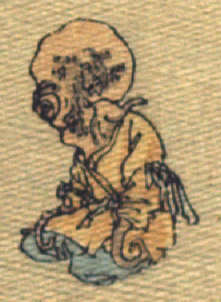

蛸の化物。黄色の上着と青色の袴を着け、袖口から吸盤のついた脚を1本ずつ出して、座っている。
著作者：J. Dautremer／出典：親書誌：U426_nichibunken_0108：Le Prince Feu-Brillant et le Prince Feu-Luisant／日付：2006／資源識別子：U426_nichibunken_0108_0002_0004
Copyright (c)2010- International Research Center for Japanese Studies, Kyoto, Japan. All rights reserved.